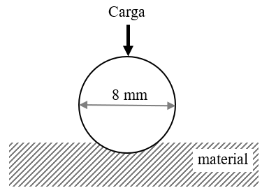
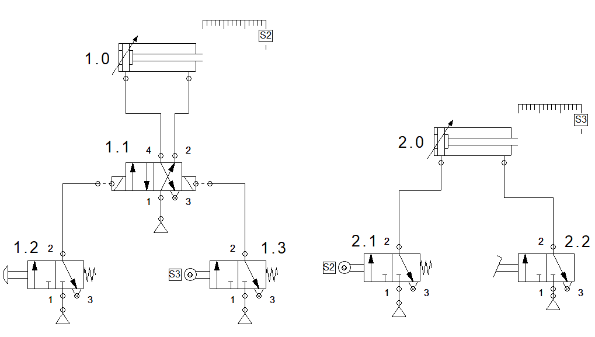
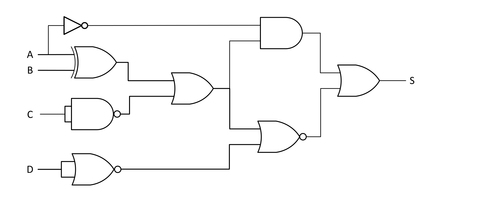
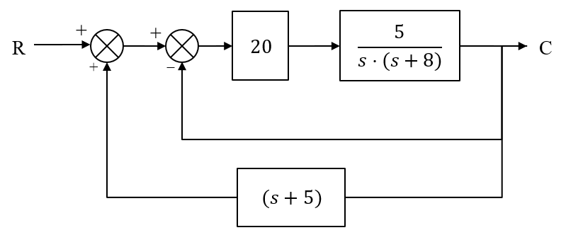

EBAU 2024 · Tecnología e Ingeniería II · Cantabria · Extraordinaria
El alumno debe escoger cinco ejercicios de los diez propuestos (cada uno vale 2 puntos). Aquí se resuelven todos. Selecciona un bloque o un ejercicio en la barra lateral: cada uno incluye el enunciado oficial, una introducción con los conceptos que se aplican y la solución paso a paso.
Bloque 1 · Materiales y motores
Ensayo de dureza Brinell, diagrama Hierro-Carbono de un acero hipoeutectoide y parámetros de un motor de motocicleta.
Bloque 2 · Neumática
Circuito neumático con dos cilindros de doble efecto y mando secuencial mediante finales de carrera.
Bloque 3 · Sistemas digitales
Simplificación por Karnaugh e implementación con NAND, y obtención de la función y la tabla de verdad de un circuito lógico.
Bloque 4 · Ciberseguridad e Inteligencia Artificial
Medidas de protección en ciberseguridad a nivel usuario y concepto de inteligencia artificial y de chatbot.
📄 Enunciado
Se realiza un ensayo Brinell para determinar la dureza de un cierto material. En el ensayo se ha utilizado una bola de 8 mm de diámetro sobre la que se ha aplicado durante 30 segundos una cierta carga. Si la constante de proporcionalidad utilizada es K = 30 y la huella obtenida tiene una superficie de 8,67 mm². Se pide:
- Calcular la dureza Brinell del material. (1 pto.)
- Si utilizamos una bola de 5 mm de diámetro, ¿qué carga se debería aplicar? ¿Cuál será la superficie de la huella obtenida en este caso? (1 pto.)

💡 ¿Qué vamos a aplicar?
En el ensayo Brinell la carga aplicada se fija con la relación \(F=K\,D^2\), donde \(K\) es la constante de ensayo (depende del material) y \(D\) el diámetro de la bola. La dureza es la carga por unidad de superficie de la huella (casquete esférico): \(HB=\dfrac{F}{S}\). Como el material es el mismo, su dureza \(HB\) y la constante \(K\) no cambian al variar la bola.
a) Dureza Brinell
La carga del ensayo se obtiene de \(F=K\,D^2\) (con la fuerza en kp y \(D\) en mm):
La dureza es la carga entre la superficie de la huella:
b) Bola de 5 mm: carga y superficie de la huella
Con el mismo material, la constante \(K=30\) se mantiene, luego la nueva carga es:
La dureza \(HB\) del material no cambia, así que la superficie de la nueva huella sale de \(HB=F'/S'\):
(Coherente con que la superficie escala con \(D^2\): \(S'=8{,}67\cdot\tfrac{25}{64}=3{,}39\ \mathrm{mm^2}\).)
📄 Enunciado
El diagrama de equilibrio de la figura representa el diagrama Hierro-Carbono en la zona de los aceros. Si disponemos de una aleación Hierro-Carbono de 120 kg con el 0,45 % de Carbono, se pide calcular:
- Masa sólida y líquida a la temperatura de 910 °C. (0,6 ptos.)
- Masa de ferrita y de cementita a 723,1 °C. (0,7 ptos.)
- Masa de ferrita dentro de la perlita a 722,9 °C. (0,7 ptos.)

💡 ¿Qué vamos a aplicar?
Es un acero hipoeutectoide (0,45 % < 0,89 % de la eutectoide). A 910 ºC el punto está en pleno campo de la austenita (una sola fase sólida), por encima de la línea A3 y muy por debajo de la línea de solidus. Al enfriar, entre A3 y la eutectoide precipita ferrita proeutectoide; al cruzar los 723 ºC la austenita restante (0,89 % C) se convierte en perlita (ferrita + cementita). Todo se calcula con la regla de la palanca (ferrita ≈ 0 % C, cementita 6,67 % C).
a) Masa sólida y líquida a 910 °C
A 910 ºC la vertical del 0,45 % C está por encima de la línea A₃ (que en esta composición ronda los 815 ºC) y muy por debajo de la solidus (~1400 ºC): el material se encuentra en el campo monofásico de la austenita. No hay nada de fase líquida.
b) Masa de ferrita y de cementita (estructura a 722,9 °C)
Justo por debajo de la eutectoide la estructura está formada por ferrita (≈ 0 % C) y cementita (6,67 % C). Sus masas totales se obtienen con la palanca global sobre el 0,45 % C:
Nota: a 723,1 ºC (justo por encima de la eutectoide) coexisten ferrita proeutectoide y austenita; la cementita aparece cuando esa austenita se transforma en perlita al bajar de los 723 ºC.
c) Ferrita dentro de la perlita a 722,9 °C
Primero se calcula la perlita, que procede de la austenita (0,89 % C) presente justo antes de la eutectoide. Su fracción sale de la palanca entre ferrita proeutectoide (0 % C) y austenita (0,89 % C):
Dentro de la perlita (0,89 % C) la fracción de ferrita eutectoide es:
📄 Enunciado
Una motocicleta de 125 c.c. alcanza una potencia máxima de 16 C.V. a 12.000 rpm. Sabiendo que el pistón tiene una carrera de 45,5 mm y la relación de compresión es de 11:1. Se pide calcular:
- El diámetro del cilindro. (0,7 ptos.)
- El volumen de la cámara de combustión. (0,7 ptos.)
- El par que proporciona el motor a la potencia máxima. (0,6 ptos.)
💡 ¿Qué vamos a aplicar?
La cilindrada (unitaria, un cilindro) es el volumen barrido por el pistón: \(V_D=\frac{\pi}{4}D^2\,L\), con \(L\) la carrera. La relación de compresión es \(r=\frac{V_D+V_c}{V_c}\), con \(V_c\) el volumen de la cámara de combustión. La potencia y el par se relacionan por \(P=M\,\omega\), con \(\omega\) en rad/s.
a) Diámetro del cilindro
La cilindrada es \(V_D=125\ \mathrm{cm^3}\) y la carrera \(L=45{,}5\ \text{mm}=4{,}55\ \text{cm}\). Despejando el diámetro de \(V_D=\frac{\pi}{4}D^2L\):
b) Volumen de la cámara de combustión
De la relación de compresión \(r=\dfrac{V_D+V_c}{V_c}=11\) se obtiene \(V_D=(r-1)V_c\):
c) Par a la potencia máxima
Pasamos la potencia a vatios (1 C.V. = 735,5 W) y la velocidad a rad/s:
📄 Enunciado
En la instalación neumática de la figura se pide:
- Para cada componente del circuito, nómbralo y explica brevemente su funcionamiento. (0,6 ptos.)
- Explica el funcionamiento de la instalación. (1 pto.)
- Si se quisiese reducir la velocidad de retorno del vástago del cilindro etiquetado "1.0", ¿qué componente se necesita? ¿Cómo se conectaría en el esquema? (0,4 ptos.)

💡 ¿Qué vamos a aplicar?
Hay que reconocer la simbología neumática (norma ISO 1219) —actuadores, distribuidor principal, válvulas de mando y finales de carrera— y razonar la secuencia de avance y retroceso de los dos cilindros gobernada por los detectores de posición S2 y S3.
a) Componentes del circuito
- 1.0 y 2.0 · Cilindros de doble efecto. Son los actuadores: el aire entra por una u otra cámara para el avance o el retroceso del vástago con fuerza en ambos sentidos. Llevan un detector de posición al final de la carrera (S2 en 1.0, S3 en 2.0).
- 1.1 · Válvula distribuidora 5/2 (biestable, pilotada neumáticamente por sus dos extremos). Es el mando principal del cilindro 1.0: dirige el aire a una u otra cámara y comunica la contraria con el escape (5 vías, 2 posiciones).
- 1.2 · Válvula 3/2 (normalmente cerrada, con retorno por muelle) accionada por pulsador: es la señal de marcha (start) que pilota la 5/2 para el avance de 1.0.
- 1.3 · Válvula 3/2 (NC, muelle) accionada por el final de carrera S3: pilota la 5/2 en sentido contrario para el retroceso de 1.0.
- 2.1 y 2.2 · Válvulas 3/2 (NC, muelle). 2.1, accionada por el final de carrera S2, envía aire para el avance del cilindro 2.0; 2.2, accionada por rodillo, gobierna su retroceso.
- S2 y S3 · Finales de carrera (detectores de posición de rodillo): S2 detecta el cilindro 1.0 en el final de su carrera y S3 el cilindro 2.0; encadenan las fases de la secuencia.
b) Funcionamiento de la instalación
Es un automatismo secuencial de dos cilindros (A = 1.0, B = 2.0):
- Al accionar el pulsador 1.2 (marcha), se pilota la 5/2 (1.1) y el cilindro 1.0 avanza (A+).
- Al llegar 1.0 al final de carrera, acciona S2, que abre la válvula 2.1 y hace avanzar el cilindro 2.0 (B+).
- Cuando 2.0 alcanza su final de carrera, acciona S3, que abre la válvula 1.3 y conmuta la 5/2 en sentido contrario: el cilindro 1.0 retrocede (A−).
- Por último, la válvula 2.2 hace retroceder el cilindro 2.0 (B−), dejando la instalación en su posición inicial lista para un nuevo ciclo.
Como la 5/2 es biestable, mantiene la última orden hasta que llega la señal contraria (memoria de posición).
c) Reducir la velocidad de retorno de 1.0
Se necesita una válvula reguladora de caudal unidireccional (estranguladora con antirretorno). Para no perder fuerza, se monta con regulación por escape ("meter-out"): se intercala en la conducción de la cámara que se vacía durante el retroceso (la del lado del vástago), de modo que estrangule el aire que sale del cilindro y deje pasar libremente el de entrada. Así se frena solo la carrera de retorno sin afectar al avance.
📄 Enunciado
Dada la siguiente función lógica
Se pide:
- Obtener la función simplificada mediante el método de Karnaugh. (1 pto.)
- Implementar la función simplificada con el menor número posible de puertas lógicas y utilizando únicamente puertas NAND de dos entradas. (1 pto.)
Nota: Para representar las puertas puede usarse los símbolos de la norma DIN o los de la norma ASA.
📄 Ver esta pregunta resuelta (PDF)💡 ¿Qué vamos a aplicar?
Se identifican los minterms de la función (filas con salida 1), se colocan en un mapa de Karnaugh y se agrupan los unos adyacentes en potencias de 2. La forma mínima se implementa después solo con NAND aplicando la doble negación y De Morgan.
a) Simplificación por Karnaugh
Los tres términos son los minterms \(m_3=\bar a b c\), \(m_6=a b\bar c\) y \(m_7=a b c\): \(S=\sum m(3,6,7)\). En el mapa (filas = a; columnas = bc en Gray):
| a\bc | 00 | 01 | 11 | 10 |
|---|---|---|---|---|
| 0 | 0 | 0 | 1 | 0 |
| 1 | 0 | 0 | 1 | 1 |
La columna bc = 11 (m3 y m7) agrupa \(b\,c\); los unos de la fila a = 1 en 11 y 10 (m7 y m6) agrupan \(a\,b\):
b) Implementación con NAND de dos entradas
Con doble negación y De Morgan, una suma de productos se hace con NAND: \(S=ab+bc=\overline{\overline{ab}\cdot\overline{bc}}\). Bastan 3 puertas NAND-2:
📄 Enunciado
Dado el circuito de la figura siguiente, se pide:
- Obtén la función lógica y simplifícala algebraicamente si es posible. (1,4 ptos.)
- Confecciona la tabla de verdad correspondiente. (0,6 ptos.)

💡 ¿Qué vamos a aplicar?
Se recorre el circuito de las entradas a la salida escribiendo la salida de cada puerta (NOT, XOR = 1, NAND/NOR con círculo, OR = ≥1, AND = &). Después se agrupa el álgebra de Boole y se comprueba con la tabla de verdad de las 16 combinaciones.
a) Función lógica
Recorriendo el circuito puerta a puerta:
La OR central combina la XOR y \(\bar C\). Llamamos \(M\) a esa señal:
\(M\) va a la vez a la AND superior (con \(\bar A\)) y a la NOR inferior (con \(\bar D\)). La OR final suma las dos:
Sustituyendo \(M\) y simplificando por casos (para \(A=0\): \(S=M+D=B+\bar C+D\); para \(A=1\): \(S=M'D=B\,C\,D\)):
b) Tabla de verdad
Con \(M=(A\oplus B)+\bar C\) y \(S=\bar A M+M'D\), las 16 combinaciones dan:
| A | B | C | D | M | S |
|---|---|---|---|---|---|
| 0 | 0 | 0 | 0 | 1 | 1 |
| 0 | 0 | 0 | 1 | 1 | 1 |
| 0 | 0 | 1 | 0 | 0 | 0 |
| 0 | 0 | 1 | 1 | 0 | 1 |
| 0 | 1 | 0 | 0 | 1 | 1 |
| 0 | 1 | 0 | 1 | 1 | 1 |
| 0 | 1 | 1 | 0 | 1 | 1 |
| 0 | 1 | 1 | 1 | 1 | 1 |
| 1 | 0 | 0 | 0 | 1 | 0 |
| 1 | 0 | 0 | 1 | 1 | 0 |
| 1 | 0 | 1 | 0 | 1 | 0 |
| 1 | 0 | 1 | 1 | 1 | 0 |
| 1 | 1 | 0 | 0 | 1 | 0 |
| 1 | 1 | 0 | 1 | 1 | 0 |
| 1 | 1 | 1 | 0 | 0 | 0 |
| 1 | 1 | 1 | 1 | 0 | 1 |
📄 Enunciado
Describe 4 medidas de protección en materia de ciberseguridad a nivel usuario.
📄 Ver esta pregunta resuelta (PDF)💡 ¿Qué vamos a aplicar?
Se trata de citar y explicar brevemente buenas prácticas al alcance del usuario final para proteger sus equipos y datos.
- Contraseñas robustas y doble factor (2FA). Usar contraseñas largas y distintas para cada servicio (mejor con un gestor de contraseñas) y activar la verificación en dos pasos, de modo que la contraseña sola no baste para acceder.
- Mantener el software actualizado. Instalar las actualizaciones del sistema operativo y de las aplicaciones cierra las vulnerabilidades conocidas que aprovechan los atacantes.
- Antivirus/antimalware y cortafuegos. Tener un antivirus actualizado y el firewall activo detecta y bloquea programas maliciosos y conexiones no autorizadas.
- Copias de seguridad periódicas. Hacer backups de los datos importantes (y guardarlos aparte) permite recuperarlos ante un borrado, una avería o un ransomware.
📄 Enunciado
¿Qué es la inteligencia artificial? Describa qué es un chatbot y desarrolle brevemente su aplicación en dos posibles campos.
📄 Ver esta pregunta resuelta (PDF)💡 ¿Qué vamos a aplicar?
Definir el concepto de IA, explicar qué es un chatbot como aplicación concreta de la IA y describir dos campos donde se utiliza.
¿Qué es la inteligencia artificial?
La inteligencia artificial (IA) es la rama de la informática que crea sistemas capaces de realizar tareas que normalmente requieren inteligencia humana: aprender de los datos, razonar, reconocer patrones, comprender el lenguaje natural o tomar decisiones, mejorando su comportamiento con la experiencia (aprendizaje automático).
¿Qué es un chatbot?
Un chatbot es un programa que conversa con el usuario mediante lenguaje natural (texto o voz), interpretando sus preguntas y generando respuestas de forma automática. Los más avanzados emplean procesamiento del lenguaje natural (PLN) e IA generativa para mantener diálogos coherentes y resolver tareas.
Dos campos de aplicación
- Atención al cliente. Los chatbots atienden consultas frecuentes en webs y apps las 24 horas (estado de un pedido, dudas, incidencias), filtran y derivan al operador humano solo los casos complejos, reduciendo tiempos de espera.
- Educación y salud. En educación actúan como tutores virtuales que resuelven dudas y proponen ejercicios personalizados; en salud, orientan al paciente, recuerdan la medicación o hacen un primer triaje de síntomas antes de acudir al profesional.
📄 Enunciado
Dado el sistema de control de la figura siguiente, se pide simplificar el sistema hasta obtener su función de transferencia \(C(s)/R(s)\).

💡 ¿Qué vamos a aplicar?
Se reduce por lazos: primero el lazo interno (cadena directa con realimentación unitaria negativa), \(\frac{G}{1+G}\); después el lazo externo con realimentación \((s+5)\) positiva, \(\frac{M}{1-M(s+5)}\).
Datos del diagrama
Cadena directa: bloque \(20\) seguido de \(\dfrac{5}{s(s+8)}\), luego
El 2.º sumador tiene realimentación unitaria negativa desde \(C\); el 1.º sumador recibe, en positivo, la señal \((s+5)\,C\).
a) Lazo interno (realimentación unitaria)
b) Lazo externo (realimentación positiva (s+5))
Con \(A=R+(s+5)C\) y \(C=M\,A\):
📄 Enunciado
Estudiar la estabilidad del sistema dado por la siguiente función de transferencia aplicando el método de Routh. A partir de dicho estudio se pide:
- Indicar si el sistema es estable. (1,4 ptos.)
- Indicar el número de polos del sistema. (0,6 ptos.)
💡 ¿Qué vamos a aplicar?
La estabilidad depende de los polos (raíces del denominador). El criterio de Routh-Hurwitz construye una tabla con los coeficientes del denominador y cuenta los cambios de signo en la primera columna: cada cambio es un polo con parte real positiva. El sistema es estable solo si no hay ninguno.
Polinomio característico
Los polos son las raíces del denominador \(4s^5+3s^4+2s^3+s^2+7s+4\). Coeficientes: 4, 3, 2, 1, 7, 4.
Tabla de Routh
| s⁵ | 4 | 2 | 7 |
|---|---|---|---|
| s⁴ | 3 | 1 | 4 |
| s³ | 0,667 | 1,667 | 0 |
| s² | −6,5 | 4 | |
| s¹ | 2,077 | 0 | |
| s⁰ | 4 |
a) ¿Es estable?
Primera columna: \(4,\ 3,\ 0{,}667,\ -6{,}5,\ 2{,}077,\ 4\). Hay dos cambios de signo (de 0,667 a −6,5 y de −6,5 a 2,077).
b) Número de polos
El denominador es de grado 5, luego el sistema tiene 5 polos; según Routh, 2 están en el semiplano derecho (parte real positiva) y 3 en el izquierdo.